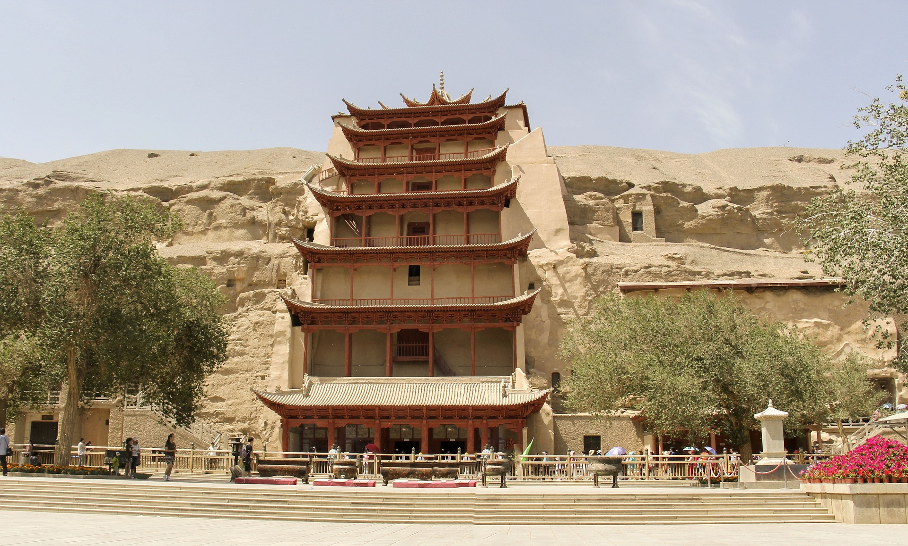

Dunhuang is a city located in the northwest of China, situated at the edge of the Gobi Desert. It is a historically and culturally significant city, known for its ancient Buddhist caves, art, and artifacts.
The Mogao Caves, a UNESCO World Heritage Site, are one of the most popular tourist attractions in Dunhuang. These caves house some of the finest examples of Buddhist art and sculpture in the world, dating back to the 4th century. They are also home to thousands of rare manuscripts and documents, including the oldest printed book in the world, the Diamond Sutra.
Apart from the Mogao Caves, Dunhuang is also home to other notable cultural sites, such as the Western Thousand Buddha Caves, Yulin Caves, and the Dunhuang Museum. The city's history and culture are also celebrated through various festivals and events, such as the Dunhuang International Kite Festival, the Dunhuang Desert Cultural Tourism Festival, and the Dunhuang Silk Road International Tourism Festival.
Aside from its cultural significance, Dunhuang is also known for its natural beauty. The Mingsha Shan (Singing Sand Dunes) and Crescent Lake are popular tourist destinations, offering breathtaking views of the surrounding desert landscape.
Overall, Dunhuang is a fascinating city with a rich history and culture, attracting visitors from all over the world who come to explore its ancient treasures and natural wonders.

Dunhuang has a long and rich history, dating back over two thousand years. Located at the crossroads of the ancient Silk Road, the city has been a hub of cultural exchange and trade for centuries.
During the Han Dynasty (206 BCE-220 CE), Dunhuang was a strategic military outpost on the western frontier. In the 4th century, the arrival of Buddhism brought a new wave of cultural development to the city. This was reflected in the construction of the Mogao Caves, a complex of hundreds of Buddhist caves that are adorned with thousands of intricate murals and sculptures.
Over the centuries, Dunhuang has been a center for the transmission of Buddhist teachings, with many pilgrims and scholars traveling to the city to study and practice Buddhism. It was also an important stop on the Silk Road, a network of trade routes that connected China with the Mediterranean world.
In the 10th century, Dunhuang came under the control of the Tibetan Empire, which led to the construction of many Tibetan-style temples and buildings in the city. Later, in the 13th century, Dunhuang became part of the Mongol Empire under the rule of Genghis Khan and his successors.
During the Ming and Qing Dynasties (1368-1911), Dunhuang experienced a decline in its importance, as new trade routes and transportation methods were developed. However, the Mogao Caves and other cultural relics in the city continued to attract visitors and scholars from around the world.
In the 20th century, Dunhuang became a focus of archaeological research and preservation efforts. The discovery of the Dunhuang manuscripts, a cache of tens of thousands of ancient texts hidden in the Mogao Caves, has greatly expanded our understanding of the history and culture of the region.
Today, Dunhuang is a thriving city with a rich cultural heritage, attracting visitors from all over the world who come to explore its ancient treasures and experience its unique blend of history, culture, and natural beauty.
Dunhuang is a city with a rich cultural and religious heritage. Its location at the crossroads of the ancient Silk Road has made it a melting pot of different cultural and religious traditions. The city's most famous cultural and religious site is the Mogao Caves, which house hundreds of Buddhist caves adorned with intricate murals and sculptures.
Buddhism has played a significant role in Dunhuang's history and culture. The arrival of Buddhism in the 4th century brought about a new wave of cultural development in the city. Many pilgrims and scholars traveled to Dunhuang to study and practice Buddhism, and the Mogao Caves were constructed to house Buddhist monks and to serve as a place of worship.
The Mogao Caves are home to thousands of Buddhist manuscripts, documents, and artifacts, which have shed light on the development of Buddhism in China and beyond. The most famous of these is the Diamond Sutra, the oldest printed book in the world, which was discovered in one of the caves in 1900.
Aside from Buddhism, other religious traditions have also left their mark on Dunhuang. Nestorian Christianity, an early form of Christianity that developed in the Middle East, was introduced to China in the 7th century and had a presence in Dunhuang. Many Nestorian Christian artifacts have been discovered in the city, including crosses and inscriptions.
Taoism, a native Chinese religion that emphasizes living in harmony with nature, has also had an impact on Dunhuang's culture. The Yulin Caves, another set of caves located outside of the city, feature Taoist murals and sculptures.
In addition to its religious heritage, Dunhuang has a rich artistic and cultural tradition. The murals and sculptures in the Mogao Caves are not only religious in nature but also showcase the development of Chinese art and culture over the centuries. The city's Silk Road heritage is also reflected in its cuisine, which features a blend of Chinese, Middle Eastern, and Central Asian flavors.
Overall, Dunhuang's cultural and religious heritage is a testament to the city's important role in the development of Chinese and world culture. Its rich history and diverse traditions continue to attract visitors from all over the world who come to explore its ancient treasures and experience its unique blend of culture, history, and religion.
Dunhuang is a city with a long and rich history of Buddhism. The arrival of Buddhism in Dunhuang dates back to the 4th century, when it became a hub of Buddhist teaching and learning. The city's most famous cultural and religious site, the Mogao Caves, is home to hundreds of Buddhist caves adorned with intricate murals and sculptures.
The Mogao Caves are one of the most significant Buddhist sites in the world, housing some of the finest examples of Buddhist art and sculpture. The caves contain over 2,000 sculptures and 45,000 square meters of murals depicting the life of Buddha, his teachings, and the history of Buddhism in China.
The caves were constructed by Buddhist monks who used them for worship and meditation. They were also used as a repository for Buddhist manuscripts, documents, and artifacts. Over the centuries, the caves became an important center of Buddhist learning, attracting scholars and pilgrims from all over the world.
The Mogao Caves are also home to the oldest printed book in the world, the Diamond Sutra. The sutra was discovered in one of the caves in 1900 and is now preserved in the British Library in London.
Aside from the Mogao Caves, Dunhuang is also home to other notable Buddhist sites, such as the Western Thousand Buddha Caves and the Yulin Caves. These caves also house Buddhist murals and sculptures, showcasing the development of Buddhist art and culture over the centuries.
The city's importance as a center of Buddhism continued through the Tang (618-907) and Song (960-1279) Dynasties. During this time, Dunhuang became a center of Buddhist translation and scholarship, with many Buddhist texts being translated from Sanskrit into Chinese.
Today, Buddhism continues to play an important role in Dunhuang's culture and identity. The Mogao Caves and other Buddhist sites in the city continue to attract visitors from all over the world who come to explore its ancient treasures and experience its unique blend of history, culture, and religion.
No matter asking locals or searching for tips, donkey meat Yellow noodles are an indispensable representation of Dunhuang cuisine. This is Dunhuang recommended the most famous characteristic snacks, "dragon meat in the sky, donkey meat on the ground" is a popular phrase in Dunhuang to eat, Dunhuang people simply eat donkey meat into a culture. In the northwest, where beef and mutton are plentiful, every donkey dies worth a living. Almost every edible part of the body was sent to the back kitchen. Sauce donkey meat, belt pork, fried donkey waist, donkey tongue meat, braised donkey tendon, donkey skin frozen, fried donkey plate sausage, donkey heart, green pepper donkey belly, fried donkey chop...
Donkey meat yellow noodles, but leave Dunhuang can not find the delicious! As the fourth of the eight oddities, yellow noodles cost less than 10 yuan a plate, and donkey meat is sold by the kilo. As thin as dragon beard, flexible nelly, soup or add vegetables to eat, fragrance overflow mouth, this is Dunhuang yellow noodles. Yellow noodles are not only delicious, but the process of making them is also an art: the ramen chef moves a piece of pale yellow dough weighing seven to eight jin with his hands, stretching it into long strips or twisting it into twists, creating noodles that look like vermicelli.
Yellow noodles, really strong way! Minced mushroom, diced donkey meat, tofu and so on made of materials, plus large pieces of donkey meat, with soup. Dunhuang donkey meat tastes delicious and fresh, and the yellow noodles are chewy enough. It is a strong taste of Great Northwest China. It is important to note that the donkey meat yellow noodle is a kind of dry mix, topping is diced donkey meat + water tofu + diced mushroom. The big pieces of sauce donkey meat should be ordered separately.
No matter in the streets, or supermarkets, scenic spots and Shazhou market can be bought, everywhere you can see drinks. Sweet and sour delicious! Dunhuang is hot in summer. A cup of iced apricot peel water will clear the heat and quench your thirst. If you go in winter, be sure to warm up a cup of it!
Apricot peel Water is made from the apricot peel of Li Guang Apricot, which is unique to Dunhuang. It is a popular drink among locals and tourists. According to historical records, the apricot was planted and grafted by Li Guang, a general flying in the Han Dynasty, in Dunhuang from the Xiongnu region (present-day Xinjiang).
Dunhuang Li Guangapricot color yellow bright as gold, clean without fuzziness, dense golden flesh, sweet and juicy, sticky kernel sweet, rich aroma, excellent quality, sweet juice like honey and enjoy a reputation, is the treasure of fruit, the king of melons and fruits. It has thin skin and thick flesh up to 8 mm. It tastes good and fragrant. The juice and honey stick to the lips. Almonds are also an important ingredient in pastry, cold food and candy.
Dunhuang is a special food, many visitors come here.
The first bite, I was like, "Wow." Is it an exaggeration? Really not! Northwest cuisine, like the locals, tends to be very rough, and so does the portions -- the lamb is huge! But this big piece of lamb is very tender, does not have the smell of mutton, and lamb together braised noodles evenly absorbed the gravy, very delicious, chewing, fragrance filled the whole mouth, is really a customer's luck! Love! The aftertaste is endless.
Ancient Dunhuang for the nomads of ethnic minorities, people collectively called them "Hu people". Dunhuang, located at the west end of the ancient Silk Road, is a place where Han and Hu cultures merge, and this Hu sheep braised cake is the evolution of the Hu people's eating customs. Since Sui and Tang Dynasties, Han culture and Hu culture (ethnic minorities) have been integrated and become a typical representative of the development of Dunhuang food culture. The name is derived from the dietary customs and practices of the Hu people. The braised mutton and flatbread are fried together, which is a Dunhuang food and a unique folk snack in Dunhuang.
Braised cake is Dunhuang father-in-law reception son-in-law of the best dish, if you are Dunhuang girlfriend brought home, and eat braised cake, you two things become 90%. This name is very northwest, this special dish is meat and cake two parts, a bit like big plate chicken, is made with a pressure cooker, meat can choose chicken, mutton and beef, the focus and key of this dish are cake, pancake thin, tendon, light, dipped in the soup to eat, very delicious. In the Shazhou night market you will see many brands such as "Yang Erhu Lamb Braised Cake", "Zhang Ji Hu Lamb braised cake" and so on.